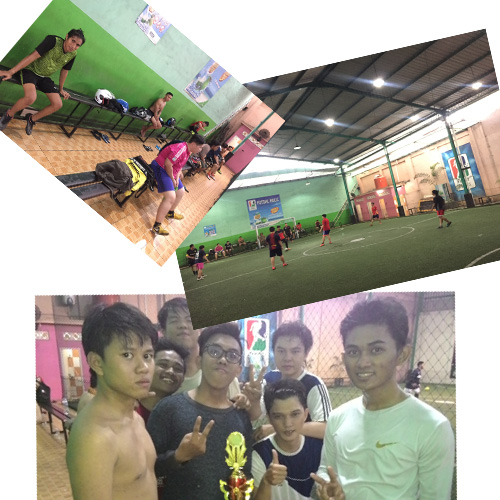

Visi
Membentuk anak-anak muda yang berkarakter,bermental kuat, berjiwa sportif dalam suasana kebersamaan dalam rangka meraih prestasi tinggi.
Menjadikan olahraga futsal sebagai pelayana olahraga yang membawa dampak buat banyak orang.
Misi